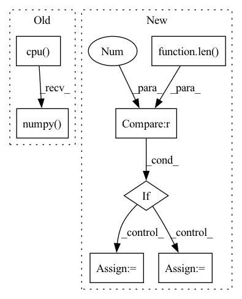

Pattern ID :18628

Before Change
y, feature = net(x)
// make score and link map
score_text = y[0,:,:,0].cpu().data.numpy()
score_link = y[0,:,:,1].cpu().data.numpy()
// Post-processing
boxes, polys, mapper = getDetBoxes(score_text, score_link, text_threshold, link_threshold, low_text, poly, estimate_num_chars)
After Change
return new_state_dict
def test_net(canvas_size, mag_ratio, net, image, text_threshold, link_threshold, low_text, poly, device, estimate_num_chars=False):
if isinstance(image, np.ndarray) and len(image.shape) == 4: // image is batch of np arrays
image_arrs = image
else: // image is single numpy array
image_arrs = [image]
img_resized_list = []
// resize
In pattern: SUPERPATTERN
Frequency: 4
Non-data size: 7
Instances
Fragment ID: 60784414
Project Name: jaidedai/easyocr
Commit Name: 78be56f87d091dfcea6d2289948fc86cc7188cf7
Time: 2021-06-12
Author: samhunsadamant@gmail.com
File Name: easyocr/detection.py
M Class Name: AnonimousClass
N Class Name: AnonimousClass
M Method Name: test_net(10)
N Method Name: test_net(10)
M Parent Class:
N Parent Class:
M File Name: easyocr/detection.py
N File Name: easyocr/detection.py
M Start Line: 26
M End Line: 58
N Start Line: 25
N End Line: 71
'>
Before Change
return {
"action":action_scaled.cpu().squeeze().numpy()[0],
"log_prob": log_prob.cpu().numpy()[0]
}
After Change
@torch.no_grad()
def select_action(self, obs, deterministic=False):
if len(obs.shape) == 1:
ret_single = True
obs = [obs]
if type(obs) != torch.tensor:
obs = torch.FloatTensor(np.array(obs)).to(util.device)
action, log_prob = itemgetter("action_scaled", "log_prob")(self.policy_network.sample(obs, deterministic=deterministic))
'>
Fragment ID: 60784413
Project Name: x35f/unstable_baselines
Commit Name: fd650918d0f96ab53625afed362025e5a53c10a6
Time: 2022-06-13
Author: 1621322691@qq.com
File Name: unstable_baselines/baselines/sac/agent.py
M Class Name: SACAgent
N Class Name: SACAgent
M Method Name: select_action(3)
N Method Name: select_action(3)
M Parent Class: BaseAgent,torch.nn.Module
N Parent Class: BaseAgent,torch.nn.Module
M File Name: unstable_baselines/baselines/sac/agent.py
N File Name: unstable_baselines/baselines/sac/agent.py
M Start Line: 148
M End Line: 158
N Start Line: 140
N End Line: 152
'>
Before Change
predicted_probs, predicted = self.get_predicted(outputs)
y_pred = list(predicted.cpu().detach().numpy())
y_true = list(labels.cpu().detach().numpy())
self.running_metrics.update(y_true, y_pred)
if criterion:
After Change
predicted_probs, predicted = self.get_predicted(outputs)
// if segmentation reshape the predictions and labels
if len(predicted.shape) > 2:
predicted = predicted.T.reshape(predicted.shape[0] * predicted.shape[2] * predicted.shape[3], predicted.shape[1])
labels = labels.T.reshape(labels.shape[0] * labels.shape[2] * labels.shape[3], labels.shape[1])
self.running_metrics.update(predicted.type(torch.uint8), labels.type(torch.uint8))
if criterion:
'>
Fragment ID: 60784412
Project Name: biasvariancelabs/aitlas
Commit Name: e717447a11e0755178ba0a98c2e0561a98ae8eae
Time: 2021-03-07
Author: ivica.dimitrovski@gmail.com
File Name: aitlas/base/models.py
M Class Name: BaseModel
N Class Name: BaseModel
M Method Name: evaluate_model(4)
N Method Name: evaluate_model(4)
M Parent Class: nn.Module,Configurable
N Parent Class: nn.Module,Configurable
M File Name: aitlas/base/models.py
N File Name: aitlas/base/models.py
M Start Line: 200
M End Line: 210
N Start Line: 201
N End Line: 213
'>
Before Change
log_prob = action_info.get("log_prob", 1)
return {
"action": action.cpu().numpy()[0],
"log_prob": log_prob[0]
}
After Change
@torch.no_grad()
def select_action(self, obs, deterministic=False):
if len(obs.shape) == 1:
ret_single = True
obs = [obs]
if type(obs) != torch.tensor:
obs = torch.FloatTensor(np.array(obs)).to(util.device)
action = itemgetter("action_scaled")(self.policy_network.sample(obs))
'>
Fragment ID: 60784411
Project Name: x35f/unstable_baselines
Commit Name: fd650918d0f96ab53625afed362025e5a53c10a6
Time: 2022-06-13
Author: 1621322691@qq.com
File Name: unstable_baselines/baselines/td3/agent.py
M Class Name: TD3Agent
N Class Name: TD3Agent
M Method Name: select_action(3)
N Method Name: select_action(3)
M Parent Class: BaseAgent,torch.nn.Module
N Parent Class: BaseAgent,torch.nn.Module
M File Name: unstable_baselines/baselines/td3/agent.py
N File Name: unstable_baselines/baselines/td3/agent.py
M Start Line: 150
M End Line: 158
N Start Line: 142
N End Line: 155